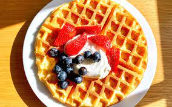

waffle

Description
Waffles are, crisp raised cake baked in a waffle iron, a hinged metal griddle with a honeycombed or fancifully engraved surface that allows a thin layer of batter to cook evenly and crisply.
Waffles are eaten throughout the world, particularly in Belgium, which has over a dozen regional varieties.[1] Waffles may be made fresh or simply heated after having been commercially cooked and frozen.
Ingredients
- 21/2 cup all-purpose flour
- 11//2 cups rolled oats
- 3 tablespoons white sugar
- 2 tablespoons baking powder
- 11/2teaspoons salt
- 4 eggs, sepereated
- 11/2cups buttermilk
- 1 cup milk
- 1/2 cup butter, melted
- 11/2 teaspoons vanilla extract
Steps
- Preheat a waffle iron according to manufacturer's instructions. Mix flour, oats, sugar, baking powder, and salt in a large bowl.
- Beat egg yolks in another bowl, reserving egg whites in a third bowl. Add buttermilk, milk, and melted butter to egg yolks; beat until well mixed. Pour buttermilk mixture into flour mixture; beat until batter is blended.
- Beat egg whites and vanilla extract in a glass or metal bowl until soft peaks form. Fold half the egg whites into the buttermilk batter until egg whites are incorporated; repeat with remaining half.
- Ladle batter into preheated waffle iron. Cook until waffles are golden and crisp, about 5 minutes. Transfer waffle to a paper towel-lined plate to prevent sogginess and repeat with remaining batter.